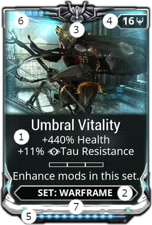
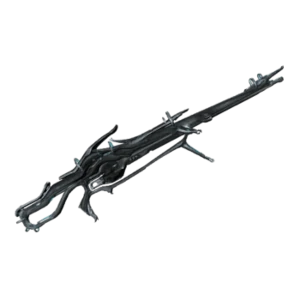

Early game
Junctios
Do all junctions until unlock entire Star Chart
Mods Focus
Mods explained
1 Name and Effects
2 Item Compatibility, Warframe, Rifle, Shotgun
3 Special Indicator, like Auro, Stance, Exilus, Riven
4 Drain and Polarity symbol, how much capacity is used and if symbol is the same less is used
5 Rank, from 0 to max, cost endo to level up and capacity costs usualy increases on higher rank
6 Stack/Quantity, number of the same rank and same mod you own
7 Rarity, color of the mod
Ways to increase Capacity
You can increase your mod capacity by leveling the item, installing an Orokin Catalyst or Reactor in the "Actions" tab, or by installing Forma to add additional polarities.
Orokin Catalyst and Reactors may be purchased from Nora Night in the Nightwave menu
Forma is a potential reward from opening Void Relics—a system you unlock upon completing the Earth -> Mars Junction.
Warframe
First survivability then ability focus and then focus on two of the following: Ability Strength, Duration, Range, and Efficiency
Recommended:
First mods like Redirection (mod) (warframe) or Vitality (mod) (warframe)
Then mods with Ability Efficiency, like Streamline (mod) (warframe) and Fleeting Expertise (mod)
(warframe)
And either Ability Strength or Range
Weapons
Focus on base damage, multishot, and combined elements, then status change or critical effects
Most Primary wepons builds use: Serration, Split Chamber, Infected Clip, and Cryo Rounds (this creates viral damage)
Expand Mods
Replace all broken mods
broken mods aren't worth it
Get Streamline (mod) (warframe) // +30% Ability Efficiency
Obtain: Complete low-level Cetus bounties on Earth
Elemental mods (mod) (weapon) // 90% Heat, Toxin, Cold, or Electricity damage
Complete Junctions and defeat enemies to get these mods.
Corrosive (Electricity + Toxin) => Strong against armor, weak against shield => Steel Path enemies, mainly enemies with ferrite armor (Grineer)


Viral (Cold + Toxin) + Heat => just about everithing else (except shield)

(optional) Magnetic (Cold + Electricity) increase damage to shields, Toxin completely ignores normal shields
Mobilize (mod) (warframe) // +20% Parkour Velocity
Farm Grineer units on Mariana, Earth
Energy Siphon (mod) (warframe) +0.6 Energy per second
Earn Nightwave Creds and purchase from Nora Night
Farm Boss Fights
Nearly every boss drops components for new weapons or warframes.
(if new) We highly recommend you farm the Jackel boss on Fossa, Venus. This will drop parts for the Rhino warframe. Easily one of the game's best early characters
- Warframes require:
- Warframe blueprint => bought in-game market for credits Then craft the following parts
- System blueprint => Jackel boss, mission Fossa (venus)
- Neuroptics blueprint => Jackel boss, mission Fossa (venus)
 Chassis blueprint => Jackel boss, mission
Fossa
(venus)
after crafting the parts you can craft the warframe.
Chassis blueprint => Jackel boss, mission
Fossa
(venus)
after crafting the parts you can craft the warframe.
Complete Nightwave Challenges
Free battle pass with 10 challenges each week. If you complete a week's challenges, then you can unlock not yet completed pervious week challenges.
1 rank is 10.000 xp, there are 30 ranks of rewards and an additional 30 ranks of Nightwave Creds. Ranks give Warframe and weapon slots, Forma (can also be grinded else where) and Nightwave Creds.
- Use creds on:
- Orokin reactor (upgrade) (warframe): Install on Warframe. This will double warframe mod capacity
- Orokin Catalyst (upgrade) (weapon): Install on Weapon. This will double weapon mod capacity
- Aura Mods (mod) (warframe) : These mods add energy and a passive to your entire team
- Steel Charge (mod) (warframe): Adds 9 capacity and +60% increased melee damage
- Energy Siphon (mod) (warframe): Adds 7 capacity and +0.6 Energy regeneration per second
- Rejuvenation (mod) (warframe): Adds 7 capacity and +3hp per second


Miscellaneous Things You Should Do
Taxon: Taxon is a Sentinel companion
You unlock the blueprint for upon completing the Earth -> Venus Junction. Earn enough materials to craft this Sentinel in your foundry. Taxon slows nearby targets, collects loot for you, and can assist in restoring your shields during combat.
Join A Clan: Clans grant access to a clan dojo and research labs
Allowing you craft dozens of new weapons and a handful of Warframes. Visit the Warframe forums or the in-game recruiting chat to find a clan. Once joined, craft a Clan Key in your foundry to gain access to the clan dojo.
Increase Your Mastery Rank: Leveling items in Warframe will grant progress toward your next Mastery Rank (MR)
Upon earning enough XP by leveling items, you'll be able to start a new Mastery Rank test. Complete these tests whenever possible, and level every item you get to level 30. The more items you level up, the more MR progress you'll make.
Join A Syndicate: When you reach Mastery Rank 3, you'll get to pledge your loyalty to one of six Syndicates

We recommend aligning with Steel Meridian. Any XP you earn will be converted to Syndicate reputation, allowing you to purchase Warframe augment mods, new weapons, and cosmetics.
Get Corrupted Mods: Most Deimos missions have Orokin Vaults you can open with Dragon Keys
granting Corrupted Mods when opened. These are some of Warframe's best mods. Look out for Transient Fortitude, Fleeting Expertise, Narrow Minded, and Overextended.
Weapons
MK1-Bo (MR0)
For 12,500 Credits, you can get a powerhouse of a melee weapon. Finish the Venus Junction to get a Stance mod for the Bo. This will carry you until you get the Xoris.
Aquire:During Awakening, the MK1-Bo is one of two melee weapons offered to the player, the other being the Skana. The weapon can also be purchased from the Market for 15,000 credits.
Vectis (MR2)
A sniper rifle that deals great damage. Fire, reload, and repeat. Zoom in with the Vectis and land shots to increase your damage with every shot landed.
Aquire: The Vectis's blueprint can be purchased from the Market.
Lex (MR3)
A secondary hand cannon that hits like a truck. You only need Credits to get this gun.
Aquire: A built Lex can be purchased from the Market for 50,000 Credits.
Hek (MR4)
A quad-barreled shotgun that deals cataclysmic damage. If you sided with the Steel Meridian Syndicate, you can earn an Augment mod for the Hek that grants 200% multishot, giving it enough firepower to carry you through the entire Star Chart.
Aquire: The Hek's blueprint can be purchased from the Market.
Xoris (MR4)
Obtained during "The Deadlock Protocol" quest, this boomerang is the best melee weapon for beginners. Throw it, detonate the weapon midair, and forget.
Aquire: First mission "Vox Solaris" get it from Eudico in Fortuna on Venus
Then do mission "The Deadlock Protocol" can be started from the codex if you are MR4
Atomas (MR5)
A secondary that fires incendiary beams that chain between targets. With a good build, this weapon will clear waves of enemies with ease.
Aquire: The Atomos's blueprint can be purchased from the Market.
The "MR" next to each weapon refers to the Mastery Rank you need to acquire them
Warframe
Rhino (Venus Boss)
This Warframe drops from The Jackal. He's incredibly tanky, has a great damage buff, and has a solid ultimate ability.
Zephyr (Clan Dojo)
Components are purchased from a clan dojo. Zephyr has excellent mobility, solid survivability, and a powerful ultimate that summons tornados.
Nezha (Clan Dojo)
Components are purchased from a clan dojo. Nezha is effectively a faster version of Rhino.